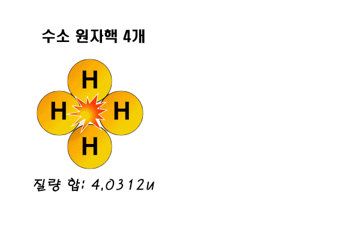

| 질량이 태양과 비슷한 별 | 중심부에서 수소 고갈->헬륨액 수축->온도 상승->중심부에서 헬륨 핵융한 반응 시작 |
|---|---|
| 중심핵을 둘러싼 수소층에서 수소 핵융합 반응->별이 팽창->광도증가, 표면온도 하강->H-R도에서 오른쪽 위로 이동->적색 거성이 됨 | |
| 적색 거성 이후에 별의 외곽층 물질을 우주 공간으로 방출->행성상 성운이 형성->별의 중심부는 수축하여 백색왜성이 됨 | |
| 태양보다 질량이 큰별 | 질량이 큰 별은 반지름과 광도가 훨씬 큰 초거성으로 진화->H-R도의 오른쪽 맨 위쪽으로 이동 |
| 질량이 큰 별에서는 중심부에서 계속적인 핵융합 반응이 일어나 최종적으로 철이 생성->철이 이루어진 핵이 빠르게 수축->초신성 폭발->중성자별 또는 블랙홀 생성 |
| 수소 핵융합 반응 | 온도가 1000만K 이상일때 일어날 수 있다 |
|---|